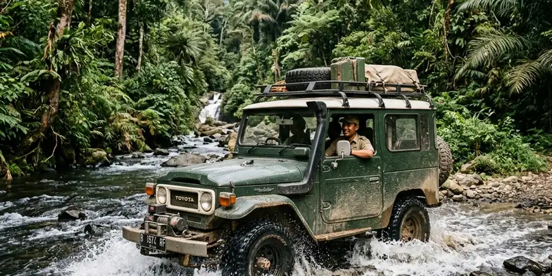

Offroad league Malang adalah rangkaian kegiatan komunitas berbentuk perjalanan atau kompetisi ringan di jalur tertentu, yang sekaligus menjadi ajang promosi wisata dan peluang kolaborasi konten lokal.
Ringkasan Inti
- Offroad league umumnya digelar melalui kegiatan lintas komunitas dan melibatkan jalur wisata alam.
- Event ini sering menjadi sarana promosi potensi wisata daerah Malang Raya.
- Pemerintah daerah kerap terlibat dalam mendukung kegiatan offroad league.
- Event semacam ini membuka peluang kolaborasi konten bagi kreator lokal.
- Keselamatan dan kelestarian lingkungan tetap menjadi prinsip utama pelaksanaan event.
Apa Itu Offroad League dan Bagaimana Bentuk Kegiatannya
Offroad league adalah kegiatan berkendara offroad yang diikuti banyak peserta lintas komunitas, biasanya berbentuk perjalanan bersama di jalur tertentu dengan titik start dan finish yang telah ditentukan.
Salah satu contoh bentuk kegiatan ini terlihat dari acara offroad komunitas Kabupaten Malang yang mengambil titik start di Kantor UPT Dinas Perhubungan Kecamatan Gondanglegi dan finish di Pantai Wonogoro, Desa Tumpakrejo, Kecamatan Gedangan. Rute semacam ini biasanya dipilih karena menawarkan variasi medan sekaligus pemandangan alam yang menarik.
Kegiatan offroad league umumnya juga diawali dengan momen kebersamaan seperti silaturahmi antaranggota, sebelum peserta melanjutkan perjalanan offroad bersama menuju titik finish yang telah ditentukan panitia.
Siapa Saja yang Biasa Terlibat dalam Offroad League
Offroad league biasanya melibatkan anggota komunitas offroad dan trail, panitia penyelenggara, serta pihak pemerintah daerah setempat yang mendukung jalannya kegiatan.
Keterlibatan pemerintah daerah tercermin dari kehadiran pejabat setempat dalam sejumlah kegiatan komunitas offroad di Kabupaten Malang, yang turut menghadiri acara sekaligus mendukung sinergi antara pemerintah dan komunitas otomotif.
Selain itu, aparat keamanan dan unsur terkait lainnya juga kerap dilibatkan untuk mendukung kelancaran serta keamanan kegiatan, mengingat offroad league biasanya melibatkan banyak peserta dan kendaraan sekaligus.

Event skala besar seperti offroad league membutuhkan sinergi dan kolaborasi dari pemerintah dan warga setempat.
Bagaimana Offroad League Berperan dalam Promosi Wisata Lokal
Offroad league berperan sebagai sarana promosi wisata karena rute yang dilalui sering melewati kawasan alam dan destinasi lokal yang belum banyak diketahui wisatawan umum.
Sebagai contoh, kegiatan offroad yang digelar bersamaan dengan acara komunitas di Kabupaten Malang juga menjadi sarana promosi potensi wisata daerah sekaligus memperkenalkan keindahan alam Kabupaten Malang kepada para peserta. Model kegiatan seperti ini menguntungkan baik komunitas maupun sektor pariwisata setempat.
Dengan memadukan kegiatan komunitas dan promosi wisata, offroad league dapat menjadi contoh kolaborasi yang saling menguntungkan antara penggemar otomotif dan pelaku usaha pariwisata lokal.
Apakah Offroad League Bisa Dijadikan Agenda Wisata Reguler
Secara umum, offroad league berpotensi dikembangkan menjadi agenda wisata reguler apabila dikelola dengan perencanaan rute, keamanan, dan promosi yang konsisten.
Wilayah Malang Raya sendiri dikenal memiliki potensi rute offroad yang beragam, mulai dari jalur hutan pinus hingga kawasan pegunungan dan pesisir, sehingga cukup potensial untuk dikembangkan sebagai agenda wisata petualangan berkala.
Namun demikian, keberhasilan agenda reguler ini juga bergantung pada dukungan berbagai pihak, termasuk komunitas, pemerintah daerah, dan pelaku usaha pariwisata setempat.
Apa Peluang Kolaborasi Konten dari Event Offroad League
Event offroad league membuka peluang kolaborasi konten bagi kreator lokal, media komunitas, maupun pelaku usaha yang ingin memanfaatkan momentum kegiatan untuk promosi bersama.
Peluang kolaborasi ini dapat berupa liputan kegiatan, dokumentasi perjalanan, hingga konten edukatif seputar keselamatan dan teknik dasar offroad. Momentum event yang melibatkan banyak peserta dan unsur pemerintah daerah juga dapat meningkatkan jangkauan konten yang dihasilkan.
Kolaborasi semacam ini berpotensi saling menguntungkan, karena komunitas mendapat eksposur lebih luas, sementara kreator konten memperoleh materi otentik dari kegiatan lapangan yang jarang ditemui di kegiatan otomotif biasa.
Kesimpulan Praktis
Offroad league Malang bukan sekadar ajang kumpul komunitas, tetapi juga peluang kolaborasi lintas sektor mulai dari pariwisata hingga konten kreatif. Bagi komunitas maupun kreator konten, memanfaatkan momentum event ini dengan perencanaan yang baik dapat memberi manfaat jangka panjang bagi semua pihak yang terlibat.
FAQ
Umumnya terbuka untuk lintas komunitas, tergantung kebijakan penyelenggara masing-masing event.
Tidak selalu, namun sejumlah event offroad league di Kabupaten Malang tercatat melibatkan dukungan pemerintah daerah setempat.
Biasanya dapat dilakukan dengan menghubungi panitia atau komunitas penyelenggara untuk menanyakan kemungkinan liputan atau kerja sama konten.